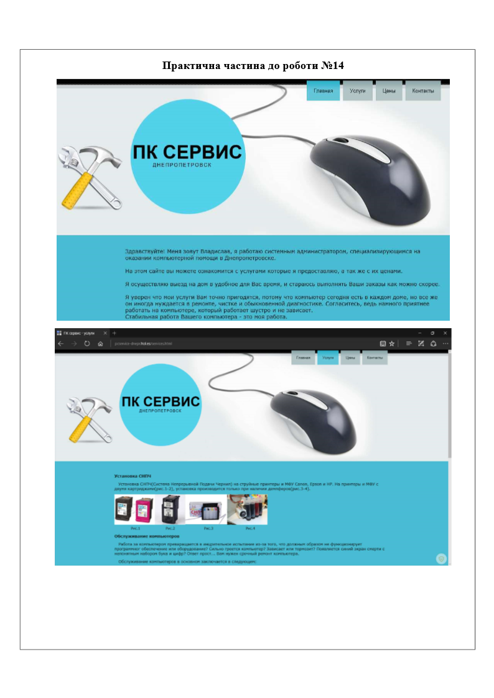

Практична робота №14
Тема: Створення сайту за допомогою системи UCOZ
Мета роботи: навчитися створювати сайти, редагувати і додавати інформацію в них.
Хід роботи:
- Завантажити систему Ucoz.
- Зареєструватися і створити сайт.
- Заповнити каталог статей.
- Створити та заповнити сторінки сайту.
Завдання:
- Заповнити форму реєстрації.
- Зареєструватися.
- Перейти в панель управління сайтом.
- Вибрати дизайн сайту і записати його назву.
- Вибрати модулі сайту і підключити їх:
- Головна сторінка
- Інформація о сайт
- Фотоальбоми
- Гостьова книга
- Переглянути створений сайт.
- На головній сторінці перейменувати назву Мой сайт в Мій сайт(В Панелі управління вашого сайту Ви можете
редагувати всі модулі сайту.)
- Додати інформацію та картинки до Головної сторінки
- Створити нові сторінки.( за домогою меню Добавление / Редактор страниц)
- Дати назви сторінкам
- Додати інформацію та картинки до створених сторінок
- Заповнити сторінку «Фотоальбом»
- На головній сторінці перейменувати назву «Мій сайт» в «*****» ( Тема вашого сайту)
